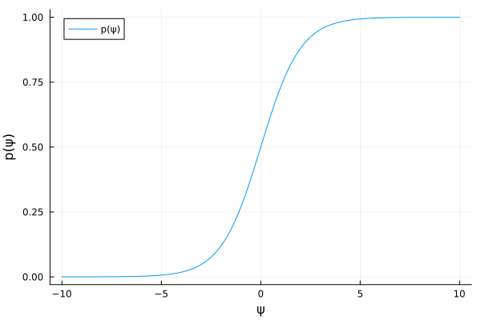
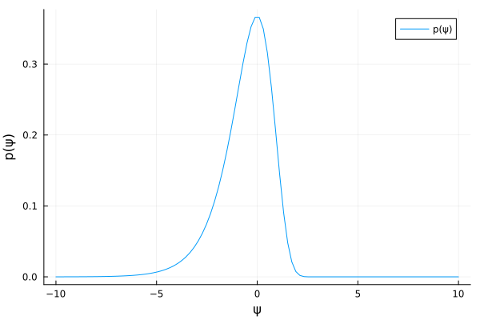

Exercise 3.10 Solution Example - Hoff, A First Course in Bayesian Statistical Methods
標準ベイズ統計学 演習問題 3.10 解答例
a)
answer
\begin{align*}
&\psi = \log \left[ \frac{\theta}{1 - \theta} \right] \\
\Leftrightarrow \quad & e^{\psi} = \frac{\theta}{1 - \theta} \\
\Leftrightarrow \quad & \theta = \frac{e^{\psi}}{1 + e^{\psi} }
=: h(\psi) \\
\end{align*}
また、
\begin{align*} \frac{d h(\psi)}{d \psi} &= \frac{e^{\psi} (1+e^{\psi}) - e^{\psi} e^{\psi} }{(1+e^{\psi})^2} \\ &= \frac{e^{\psi} (1+e^{\psi} - e^{\psi} )}{(1+e^{\psi})^2} \\ &= \frac{e^{\psi}}{(1+e^{\psi})^2} \quad ( > 0)\\ \end{align*}よって、
\begin{align*} p_{\psi} (\psi) &= p_{\theta}(h(\psi)) \times \mid \frac{d h(\psi)}{d \psi} \mid \\ &= \frac{1}{B(a,b)} h(\psi)^{a-1} (1-h(\psi))^{b-1} \times \frac{e^{\psi}}{(1+e^{\psi})^2} \\ &= \frac{1}{B(a,b)} \left( \frac{e^{\psi}}{1 + e^{\psi} } \right)^{a-1} \left( \frac{1}{1 + e^{\psi} } \right)^{b-1} \times \frac{e^{\psi}}{(1+e^{\psi})^2} \\ &= \frac{1}{B(a,b)} \left( \frac{e^{\psi}}{1 + e^{\psi} } \right)^a \left( \frac{1}{1 + e^{\psi} } \right)^b \end{align*}using Plots
using SpecialFunctions
a, b = 1, 1
p_ψ = ψ -> exp(ψ)^a * (1 + exp(ψ))^(-b) / beta(a,b)
ψs = range(-10, 10, length=100)
p = plot(ψs, p_ψ.(ψs), xlabel="ψ", ylabel="p(ψ)", label="p(ψ)")
savefig(p, "fig/excersise3-10a.png")
"fig/excersise3-10a.png"

b)
answer
\begin{align*}
&\psi = \log \theta \\
\Leftrightarrow \quad & \theta = e^{\psi} =: h(\psi)
\end{align*}
また、
\begin{align*} \frac{d h(\psi)}{d \psi} &= e^{\psi} \quad ( > 0) \end{align*}よって、
\begin{align*} p_{\psi} (\psi) &= p_{\theta}(h(\psi)) \times \mid \frac{d h(\psi)}{d \psi} \mid \\ &= \frac{b^a}{\Gamma(a)} h(\psi)^{a-1} e^{-b h(\psi)} \times e^{\psi} \\ &= \frac{b^a}{\Gamma(a)} e^{\psi (a-1)} e^{-b e^{\psi}} \times e^{\psi} \\ &= \frac{b^a}{\Gamma(a)} e^{\psi a -b e^{\psi} } \\ \end{align*}using Plots
using SpecialFunctions
a, b = 1, 1
p_ψ = ψ -> b^a/gamma(a) * exp(ψ*a - b*exp(ψ))
ψs = range(-10, 10, length=100)
p = plot(ψs, p_ψ.(ψs), xlabel="ψ", ylabel="p(ψ)", label="p(ψ)")
savefig(p, "fig/excersise3-10b.png")
"fig/excersise3-10b.png"
